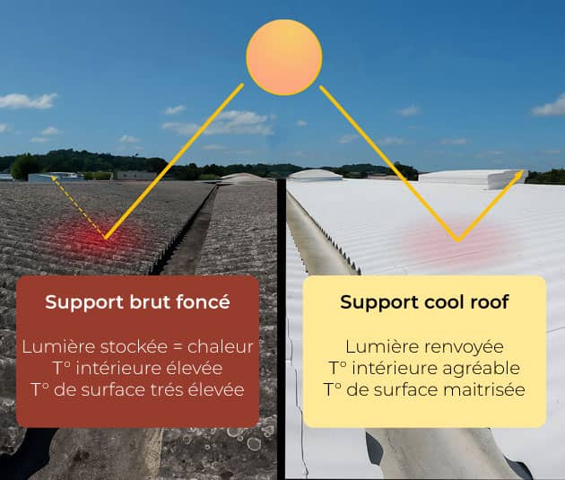

Réduisez la chaleur de votre toiture et améliorez votre confort toute l'année.

Le Cool Roofing est une technique consistant à appliquer une peinture réfléchissante sur une toiture afin de renvoyer une grande partie des rayons du soleil. La température de la toiture diminue, ce qui améliore le confort intérieur et réduit les besoins en climatisation.
Chez CK Toiture & Façade, nous réalisons :
Vous souhaitez réduire la chaleur de votre bâtiment ? Confiez vos travaux à CK Toiture & Façade.
Demander un devis